| 项目名称 | 泰小虎 · 直播挂车与时长发券 |
|---|---|
| 创建时间 | 2026-07-15（需求框架 v0.3 起点）；PRD 初稿 2026-07-17 |
| 负责人 | PM：袁中天、刘航 ｜ 技术 Owner：江世华 ｜ 测试：xx（待定） |
| 文档状态 | 待评审 |
| 关联需求 | 优惠券体系（调用其发券引擎 A4「发券活动配置」的「直播观看时长发券」触发源）；商品域「健康好物」库（挂车商品来源） |
| 接入系统 | 火山引擎企业直播（直播流 + 观播 SDK + 场次/直播 ID） |
| 版本号 | 修订日期 | 修订人 | 修订内容简述 | 状态 |
|---|---|---|---|---|
| v0.3 | 2026-07-15 | 袁中天 | 需求框架：确认场次=火山 live_id、T+1 批处理发券、未登录直跳登录、复用优惠券体系 A4 等关键决策 | 已对齐 |
| v1.0 | 2026-07-17 | 袁中天 | 整合需求框架 v0.3 与架构图，按 PRD 规范 A~I 补全功能需求详情、验收标准、埋点需求、非功能性需求、边界自检、维护规范；定稿发券梯度=单阈值（沿用 A4） | 已归档 |
| v1.1 | 2026-07-17 | 袁中天 | B 补 KPI 量化草案值；D 终端 1&2 明确关联 L-客户端合并原型；F 埋点对齐《泰小虎埋点事件管理》v2.0（23 事件）——用户端可感知行为改为复用现状事件、仅保留 3 个直播特有新增、后台操作单列不进 App 埋点表 | 待评审 |
| v1.2 | 2026-07-17 | 袁中天 | F 板块按用户最新《泰小虎埋点表 v2.3》复核重写：基线改 v2.3（含划线删除项）；删除对不存在的 login_complete 引用，登录信号改为复用友盟自带埋点；复用事件只引用 v2.3 保留（非划线）属性、purchase_* 不再引用已删 recommend_id；新增事件按 v2.3 标准列格式定义（3 个：live_watch_heartbeat / live_watch_end / coupon_issue_trigger）；挂车商品卡曝光本期不埋 | 待评审 |
| v1.3 | 2026-07-17 | 袁中天 | C 板块业务/信息/数据三类图全部改为图片（PNG）插入：业务流程图重绘为横向钉钉流程图样式，信息架构图按四层列式重绘，数据流转图按模板重绘；D 板块涉及原型处括号补本地原型链接；文档版本号整体更新为 v1.3 | 待评审 |
| v1.4 | 2026-07-17 | 袁中天 | D 功能需求详情按参考模板重构：补充所有终端界面截图（后台/客户端共 10 张）、每个元素级交互说明、业务逻辑/计算公式、字段级数据来源、更完整的边界条件；修正版本号说明 | 待评审 |
| v1.4.1 | 2026-07-17 | 袁中天 | D.2「涉及终端明细」改为参考模板三列格式（影响对象 / 影响说明 / 应对措施），内容按终端细化并包含原型链接；页面最大宽度由 1040px 调整为 1200px；信息架构图与全文中「健康好物库」统一改为「商品中心」 | 待评审 |
| v1.4.2 | 2026-07-21 | 袁中天 | 同步平台端后台原型（直播挂车-后端原型.html）全部迭代改动至 §D：① 后台导航由左侧侧边栏改为顶部水平导航+页面跳转（hash 路由）；② 直播商品池推送状态以火山引擎返回为准（未推送→推送、已推送→更新重推），删除取消推送/推送中/重试；③ 直播间管理新增「同步直播间」按钮、列表补封面/直播ID/挂车数、操作列改「查看挂车商品」并删除「查看日志」；④ 挂车商品列表改「同步/同步全部商品」、表格增「销售合计」；⑤ 直播数据看板移除 KPI 汇总卡仅保留查询+表格，月汇总选月/日汇总选日。 | 待评审 |
在数字人能力上线之前，需先具备独立直播 H5 页面以承载直播带货场景。当前痛点：
具体场景：用户在 App/小程序看到一场"科学减重专场"直播，边看边对主播推荐的健康好物产生兴趣，但无法直接下单；看完直播也无任何后续触达，观看时长被白白浪费。
| 指标 | 说明 / 口径 | 目标（草案） |
|---|---|---|
| 直播观看人数（UV） | 进入直播 H5 的去重用户数（已登录态） | 单场 ≥ 2,000 |
| 人均观看时长 | 单次连续观看时长中位数（T+1 累计口径） | 中位数 ≥ 6 分钟 |
| 达阈值人数占比 | 单次连续观看 ≥ 发券阈值的 UV / 直播观看 UV | ≥ 35% |
| 挂车点击率 | 挂车商品卡点击 UV / 直播观看 UV | ≥ 15% |
| 发券触达率 | 达阈值并成功发券人数 / 达阈值人数 | ≈ 100%（静默） |
| 获券通知点击率 | 点击"去使用" UV / 通知弹窗展示 UV | ≥ 25% |
| 券核销率 | 核销券数 / 发放券数（券逻辑在优惠券体系） | ≥ 12% |
| 挂车成交转化率 | H5 落地页确认购买 UV / 挂车点击 UV | ≥ 8% |
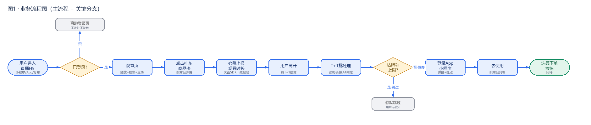
| 编号 | 触发场景 | 处理路径 / 规则 |
|---|---|---|
| E1 | 未登录进入直播 | 直跳登录页；未登录期间不计时、不发券；登录成功回到观看页从头计时。 |
| E2 | 弱网 / 火山回调丢失 | 因发券为 T+1 批处理（非实时），无需"断网即退出"的实时发券兜底；弱网/回调丢失仅导致该时段时长缺失（数据采集层通用问题），不影响 T+1 对已沉淀累计时长的判定。 |
| E3 | 中途退出再进 | 同一 live_id 下观看时长从 0 重置；需单次连续观看达阈值才发券（不累计）。 |
| E4 | 发券 API 调用失败 | 幂等重试（以触发记录为幂等键防重）；仍失败记日志供排查；不发券不通知。 |
| E5 | 达限领上限 | 本场静默不再发券；已发张数来自触发记录本场计数。 |
| E6 | 券过期未用 | 券过期属优惠券体系职责，本需求仅记录触发，不持有券实例状态。 |
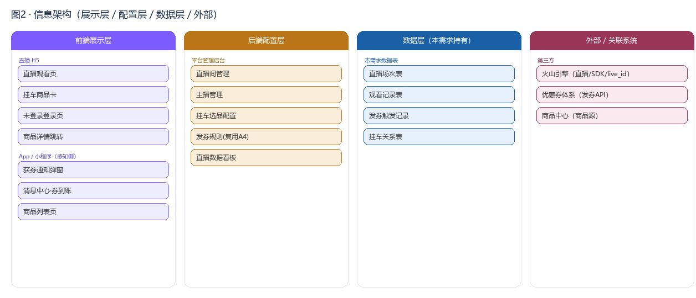
本需求仅持有「直播场次 / 观看记录 / 发券触发记录」三类实体；券实例状态在优惠券体系内。
| 起始状态 | 触发动作 (Action) | 目标状态 | 业务规则 / 前置条件 |
|---|---|---|---|
| 未开始 | 运营创建场次并开播 | 直播中 | 火山侧创建直播（live_id 由火山 CreateActivityAPIV2 返回），H5 可进入观看；时长采集与发券仅直播中有效。 |
| 直播中 | 运营结束直播 | 已结束 | 停止时长采集，不再发券；本场已触发记录保留。 |
| 已结束 | 生成回放 | 回放中 | 回放不触发发券（时长发券仅直播中有效）。 |
| 直播中 | 运营紧急中止 | 已结束 | 同"结束直播"；已发券不受影响。 |
| 起始状态 | 触发动作 (Action) | 目标状态 | 业务规则 / 前置条件 |
|---|---|---|---|
| 未观看 | 用户进入且已登录 | 观看中 | 开始计时（每次从 0；中途退出重置）；未登录不进入此态。 |
| 观看中 | 用户退出 / 切后台 | 暂停(退出) | 停止计时；本次时长清零（E3 重置策略，不累计）。 |
| 暂停(退出) | 用户再次进入 | 观看中 | 重新从 0 计时（E3）。 |
| 观看中 | 直播结束 | 已结束(待结算) | 本场时长停止并沉淀，待 T+1 批处理结算。 |
| 已结束(待结算) | T+1 批处理读累计时长 | 已结算 | 由发券触发记录（实体 C）承接：达阈值发券，未达标记"时长不足未发"。 |
| 起始状态 | 触发动作 (Action) | 目标状态 | 业务规则 / 前置条件 |
|---|---|---|---|
| 未结算 | T+1 批处理：达阈值且本场未达限领 | 已触发(成功) | 调优惠券体系发券 API 成功；以 user_id+live_id 为幂等键（单阈值无梯度维度）。 |
| 未结算 | T+1 批处理：达阈值但本场已达限领 | 已上限(不发) | 静默跳过，不再发（用户无感知）。 |
| 未结算 | T+1 批处理：未达阈值 | 未发(时长不足) | 本场累计时长不足，标记未发，本场不再结算。 |
| 未结算 | T+1 批处理：API 调用失败 | 失败(待重试) | 幂等重试；仍失败记日志，不发券不通知。 |
| 已触发(成功) | 用户登录 App/小程序 | 已通知 | 登录成功第一个页面即弹窗 + 消息中心红点；同一批券只通知一次（去重）。 |
| 失败(待重试) | 重试成功 | 已触发(成功) | 幂等保证，不重复发券。 |
| 已上限(不发)/未发 | — | 终态 | 本场不再发券。 |
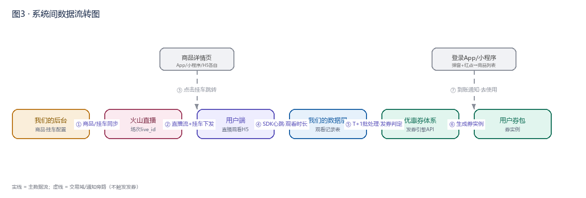
| 影响对象 | 影响说明 | 应对措施 |
|---|---|---|
| 直播 H5 观看页（用户端） | 新增直播观看入口；未登录用户点击商品/互动/获券时必须先登录；观看中按后台配置展示挂车商品、点赞、评论、分享等互动能力。 | 由 live-client.html 承载（观看页/登录页/商城落地页）；播放器接入火山观播 SDK；未登录态统一跳转登录后返回原页面。 |
| App / 小程序 · 获券通知 | 登录后首屏需新增「获券通知」弹窗；消息中心需新增「券到账」类型记录与红点提示；「去使用」需跳转可核销的商品列表。 | 由 live-client.html 承载（获券弹窗/消息中心）；消息中心通过现有通知通道新增类型，不改造底层推送；弹窗由服务端「未读获券记录」触发。 |
| 平台后台 · 直播间管理 | 新增直播间创建、编辑、基础信息管理、挂车上限 N、开播/停播/回放控制；直播数据与第三方火山 ActivityId 关联。 | 由 live-platform.html 承载；直播基础字段落本地「直播场次表」，状态通过火山 UpdateActivityStatusAPI 同步。 |
| 平台后台 · 主播管理 | 新增主播增删改查、启用/禁用/违规状态、搜索能力；删除主播时需校验是否关联未结束直播。 | 由 live-platform.html 承载；主播信息落本地「主播表」，与直播间通过主播 ID 关联；关联未结束直播时禁止删除并提示。 |
| 平台后台 · 挂车选品配置 | 新增从「商品中心」选品挂到直播间的入口，挂车数量受直播间「挂车上限 N」限制；支持移除/调整顺序。 | 由 live-platform.html 承载；挂车关系落本地「挂车关系表」；选品数据从商品中心接口只读获取。 |
| 平台后台 · 直播数据看板 | 新增直播观看人数、人均时长、发券转化、挂车点击/成交转化、明细导出等数据展示。 | 由 live-dashboard.html 承载；数据来源于火山 SDK 心跳、本需求发券触发记录、商城订单域；T+1 离线聚合后展示。 |
| 优惠券体系 A4（复用） | 发券活动配置、券模板、券实例、核销、限领/周期规则已在 A4 体系内建设；本需求仅作为新的触发源接入。 | 复用 A4 能力，不单独建设；本需求通过调用 A4 发券 API 完成 T+1 批处理发券，券包展示/核销逻辑沿用既有端表现。 |
live-client.html——包含 L1 直播观看页、L4 登录引导页、L3 商品落地页。以下界面描述以截图为准。图 D-1：L1 直播观看页（已登录态）
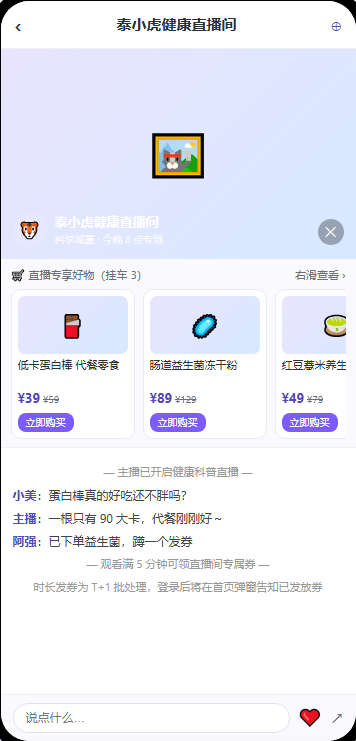
图 D-2：L1 直播观看页（未登录遮罩）
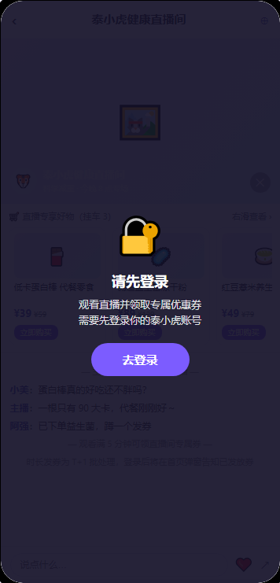
| 元素 | 手势 | 触发前 | 触发后 | 异常/反馈 |
|---|---|---|---|---|
| 挂车商品卡 | 点击 | 商品卡片展示图/名/价/标签 | 从底部弹出半屏商品确认 Sheet | 商品已下架则 toast「商品已下架」 |
| 商品确认 Sheet | 点击「立即前往」 | Sheet 显示商品图、名、价格、当前环境目标 | 按当前环境跳转：App→App 商品详情，小程序→小程序商品详情，浏览器→H5 商品详情 | 环境识别失败兜底 H5；跳转失败 toast「跳转失败，请重试」 |
| 商品确认 Sheet | 点击「取消」/点遮罩 | Sheet 展开 | Sheet 下滑收起 | — |
| 挂车商品区 | 左右滑动 | 展示前 3 个商品 | 横向滚动查看后续商品 | 仅 3 个商品时不可滑动 |
| 未登录遮罩 | 点击「去登录」 | 全屏遮罩显示锁图标+提示 | 跳转 L4 登录页 | 登录成功后返回观看页，观看时长从 0 开始 |
| 点赞/分享/评论图标 | 点击 | 图标默认态 | 点赞：图标高亮+1；评论：拉起键盘；分享：调用系统分享面板 | 未登录点赞：弹登录引导 |
| 播放器 | 点击 | 播放器正常播放 | 暂停/播放切换 | 直播结束显示结束封面 |
duration_delta（秒）；本次观看时长 = Σ(duration_delta)，有效心跳需满足 2s ≤ 间隔 ≤ 120s。| 场景 | 处理规则 |
|---|---|
| 未登录 | 显示全屏遮罩，点击「去登录」跳转；未登录期间不计时、不发券、不累计。 |
| 弱网/火山回调丢失 | 仅丢失该时段时长，不影响 T+1 对已沉淀时长的判定。 |
| 心跳间隔异常 | duration_delta < 2s 或 > 120s 视为异常，丢弃该心跳。 |
| 切后台 | 切后台即停止计时，返回后重新从 0 开始。 |
| 直播结束 | 停止计时，本次观看时长沉淀，待 T+1 结算。 |
| 商品下架/售罄 | 点击时 toast「商品已下架」，不跳转。 |
| 字段/数据 | 来源 | 说明 |
|---|---|---|
| 直播流/视频画面 | 火山引擎观播 SDK（第三方） | 通过 SDK 嵌入 H5 播放 |
| 观看时长/心跳 | 火山观播 SDK 回调（第三方） | SDK 按固定频率回调心跳 |
| 商品名称/价格/图 | 商品域「商品中心」（第三方） | 通过商品 ID 拉取 |
| 用户登录态 / UserId | 泰小虎统一登录态（本地存储 + 接口校验） | 未登录跳转登录 |
| 观看记录 | 本需求数据层 | 每次进入/退出写一条记录 |
live-client.html——L5 获券通知弹窗、L6 消息中心。图 D-3：L5 获券通知弹窗
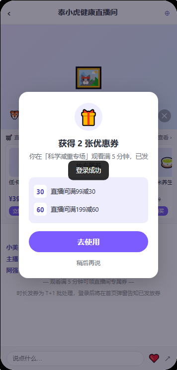
图 D-4：L6 消息中心（券到账记录+红点）
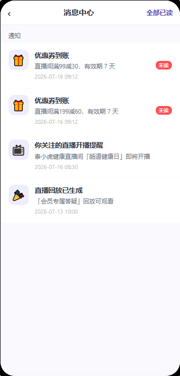
| 元素 | 手势 | 触发前 | 触发后 | 异常/反馈 |
|---|---|---|---|---|
| 获券弹窗 | 自动弹出 | 用户登录成功进入第一个页面 | 居中弹窗展示券张数/券列表/「去使用」/「稍后再说」 | 无未通知券时不弹；同一批券只弹一次 |
| 「去使用」 | 点击 | 弹窗展示 | 关闭弹窗，跳转商品列表页（非「我的优惠券」） | 商品列表为空时显示空态 |
| 「稍后再说」 | 点击 | 弹窗展示 | 关闭弹窗，保留消息中心红点 | — |
| 消息中心券记录 | 点击 | 列表展示券到账记录 | 跳转商品列表页 | 已过期券显示「已过期」标签 |
| 红点 | — | 存在未读通知 | 用户进入消息中心或点击「全部已读」后消失 | — |
page_view 触发时，检查本需求「发券触发记录」中该用户存在未通知且 result=issued 的记录；若存在则弹出。| 场景 | 处理规则 |
|---|---|
| 无未通知券 | 登录后不弹窗，无红点。 |
| 登录后首屏不是直播页 | 无论进入首页、个人中心还是商品页，均弹窗。 |
| 多账号切换 | 以当前登录 user_id 为准，不同账号数据隔离。 |
| 券已过期 | 弹窗仍展示，但点击「去使用」进入商品列表时过滤掉过期券。 |
| 字段/数据 | 来源 | 说明 |
|---|---|---|
| 登录成功信号 | 友盟自带埋点 / 泰小虎登录 SDK | 用于触发弹窗检查 |
| 发券结果 | 本需求「发券触发记录」表 | result=issued 且未通知 |
| 券名称/金额/有效期 | 优惠券体系（第三方） | 通过券批次 ID 反查 |
| 未读状态 | 本需求「用户通知记录」表 | 记录用户是否已读/已点 |
直播挂车-后端原型.html（平台端）、直播挂车-前端原型.html（用户端）。直播挂车-后端原型.html（平台端后台，顶部导航三页面）——直播间列表、新建/编辑直播弹窗、查看挂车商品抽屉。图 D-5：直播间列表
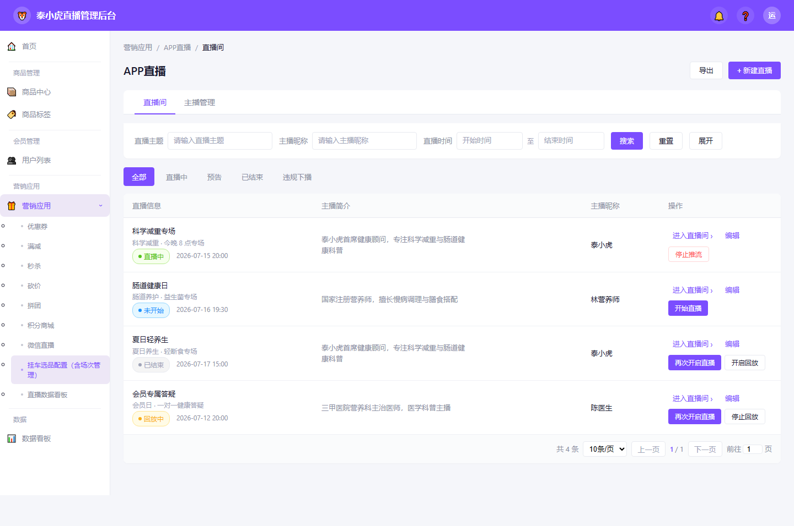
图 D-6：新建/编辑直播弹窗
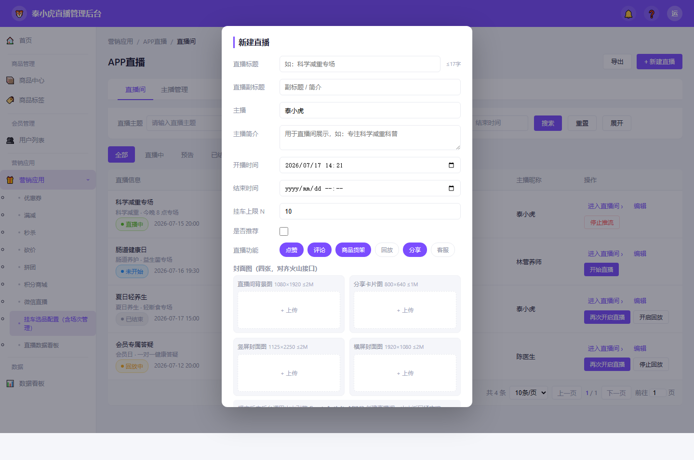
| 元素 | 手势 | 触发前 | 触发后 | 异常/反馈 |
|---|---|---|---|---|
| 「+ 新建直播」 | 点击 | 列表页 | 打开「新建直播」弹窗，字段为空 | 无权限时按钮置灰/隐藏 |
| 「编辑」 | 点击 | 列表操作列 | 打开弹窗并回填当前直播数据，标题为「编辑直播基础信息」 | 直播中/已结束仅部分字段可编辑 |
| 「进入直播间」 | 点击 | 列表操作列 | 跳转直播间详情页（挂车配置页） | — |
| 「查看挂车商品」 | 点击 | 列表操作列 | 右侧抽屉打开该直播间商品列表（商品编号/信息/类别/排序/销量/销量台/销售合计），见 D.8.5 | — |
| 「同步直播间」 | 点击 | 直播间列表页 | 调用火山引擎接口拉取最新直播间与挂车商品，刷新列表及挂车数 | 拉取中按钮 loading；失败 toast 具体原因 |
| 功能多选 chips | 点击 | 未选中/选中态 | 切换选中/取消选中 | 至少保留一项，最后一项不可取消 |
| 封面上传区 | 点击 | 显示「+ 上传」占位 | 唤起系统文件选择，选择后预览并校验尺寸 | 尺寸/格式/大小不符：提示具体规格 |
| 「开始直播」/「停止推流」 | 点击 | 操作列显示对应按钮 | 调火山 UpdateActivityStatusAPI，成功更新状态；失败气泡提示「更改失败，失败原因【xxxxx】」 | 连续点击需防抖，防止重复请求 |
| 场景 | 处理规则 |
|---|---|
| 火山接口失败 | 气泡提示「更改失败，失败原因【接口返回信息】」，状态不变。 |
| 开播时间早于当前时间 | 表单校验失败，提示「开播时间必须晚于当前时间」。 |
| 主播未选择 | 提示「请选择主播」。 |
| 图片规格不符 | 提示具体错误，如「横屏封面图需 1920×1080，大小不超过 2M」。 |
| 删除直播间 | 仅「未开始」状态可删除；直播中/已结束不可删除。 |
| 重复提交 | 提交按钮 loading，接口返回前不可再次点击。 |
| 字段/数据 | 来源 | 说明 |
|---|---|---|
| 直播标题/副标题/时间/功能/上限 | 平台后台表单 → 本需求直播场次表 | 运营录入 |
| 主播 | 本需求主播表 | 下拉选择 |
| 封面图 | 对象存储（OSS/S3） | 上传后返回 URL |
| live_id / 状态 | 火山引擎 CreateActivityAPIV2 / UpdateActivityStatusAPI（第三方） | 创建/开关播时返回 |
| 在线人数 | 火山直播数据接口（第三方） | 详情页展示 |
直播挂车-后端原型.html（平台端后台）。图 D-7：主播管理
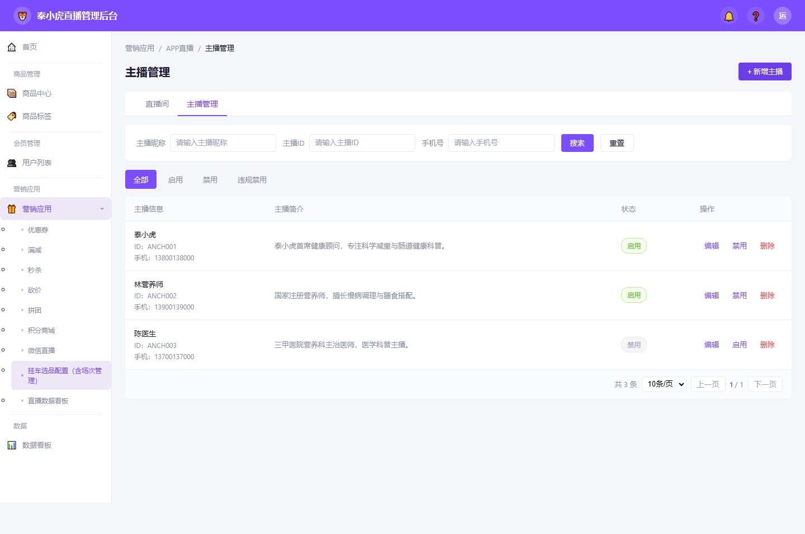
图 D-8：新增/编辑主播弹窗
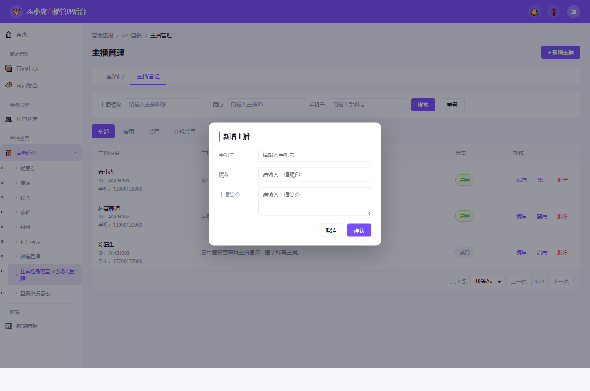
| 元素 | 手势 | 触发前 | 触发后 | 异常/反馈 |
|---|---|---|---|---|
| 「主播管理」Tab | 点击 | 直播间视图 | 切换到主播管理视图，列表、筛选、状态 Tab 重置为默认 | — |
| 「+ 新增主播」 | 点击 | 主播管理列表 | 打开弹窗，标题「新增主播」 | 无权限时隐藏 |
| 「编辑」 | 点击 | 操作列 | 打开弹窗回填数据，标题「编辑主播」 | — |
| 「启用/禁用」 | 点击 | 状态标签为当前状态 | 二次确认后切换状态；禁用后不可被新建直播选择 | 操作中接口失败则状态不变 |
| 「删除」 | 点击 | 操作列 | 二次确认后删除；若有关联未开始/直播中场次则禁止删除 | 提示「该主播有关联直播，无法删除」 |
| 场景 | 处理规则 |
|---|---|
| 手机号重复 | 提示「手机号已存在」。 |
| 禁用主播被直播引用 | 不影响已创建直播，但新建直播时下拉列表不再显示该主播。 |
| 违规禁用 | 运营手动标记，需填写违规原因；违规主播不可恢复为启用。 |
| 字段/数据 | 来源 | 说明 |
|---|---|---|
| 主播昵称/手机号/简介 | 平台后台表单 → 本需求主播表 | 运营录入 |
| 主播头像 | 默认头像（无单独上传） | 如后续支持上传，走对象存储 |
| 关联直播场次 | 本需求直播场次表 | 删除校验用 |
直播挂车-后端原型.html（平台端后台）——查看挂车商品抽屉、挂车配置。图 D-9：直播间详情 · 挂车配置
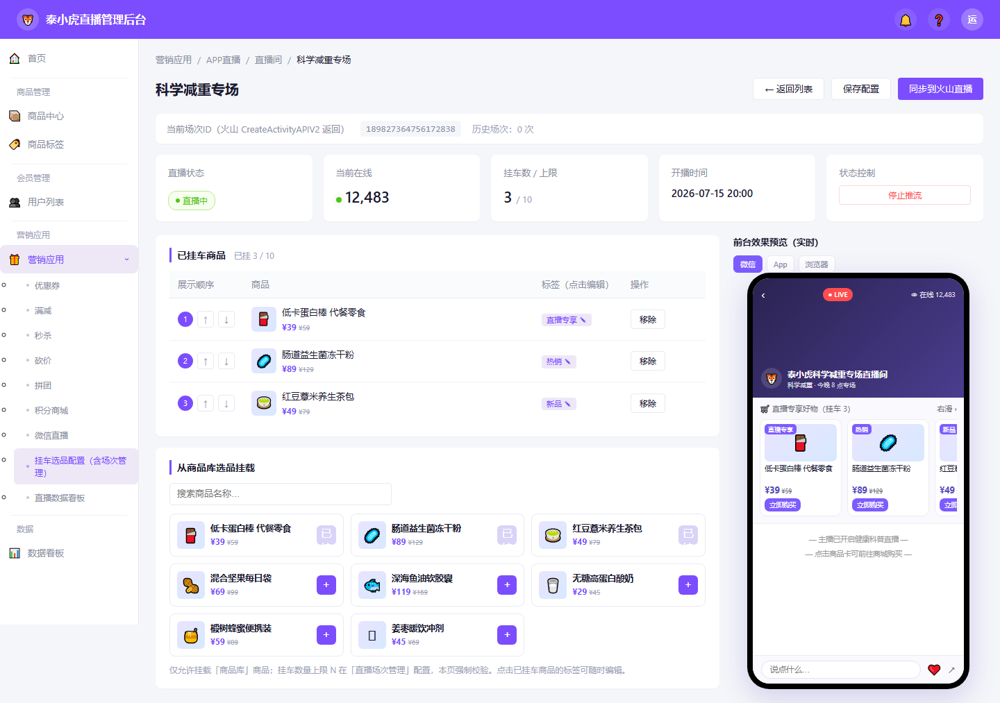
| 元素 | 手势 | 触发前 | 触发后 | 异常/反馈 |
|---|---|---|---|---|
| 商品库「+」 | 点击 | 商品展示在商品库网格 | 商品加入右侧「已挂车」列表，并更新顺序 | 已达上限 N 时「+」置灰，toast「本场最多挂 N 个商品」 |
| 「移除」 | 点击 | 商品在已挂车列表 | 从已挂车列表移除，商品库「+」恢复可选 | — |
| 上下箭头 | 点击 | 商品在当前顺序 | 与相邻商品交换顺序 | 第一项不可上移，末项不可下移 |
| 商品标签 | 点击 | 标签展示「直播专享」等 | 弹出标签选择浮层，切换标签 | — |
| 环境切换按钮 | 点击 | 微信/App/浏览器 | 右侧手机预览区显示对应环境目标提示 | 仅预览效果，不影响配置 |
| 「保存配置」 | 点击 | 配置有变更 | 保存挂车关系到本需求数据层，成功后 toast「保存成功」 | 未达上限也可保存；超限不可保存 |
| 场景 | 处理规则 |
|---|---|
| 超出挂车上限 | 点击商品库「+」时 toast「本场最多挂 N 个商品」，不加入。 |
| 商品库为空 | 显示空态「暂无在售商品」。 |
| 直播中修改挂车 | 允许修改，但需用户二次确认「直播中修改会实时影响用户端」。 |
| 火山同步失败 | 挂车关系仍保存到我方，但提示「同步到火山失败，失败原因【xx】」。 |
| 字段/数据 | 来源 | 说明 |
|---|---|---|
| 商品库商品 | 商品域「商品中心」（第三方） | 状态=在售 |
| 已挂车关系 | 本需求挂车关系表 | live_id + goods_id + order + tag |
| 上限 N | 本需求直播场次表 | 直播间配置 |
| 火山挂车同步 | 火山引擎接口（第三方） | 将商品列表推送到直播间 |
| 元素 | 手势 | 触发前 | 触发后 | 异常/反馈 |
|---|---|---|---|---|
| 商品名称/编号搜索、类别筛选 | 输入/选择 | 商品列表 | 按条件过滤列表 | — |
| 「同步」 | 点击 | 抽屉工具栏 | 调用火山引擎接口拉取该直播间最新商品数据，刷新列表 | 失败时 toast 具体原因 |
| 「同步全部商品」 | 点击 | 抽屉工具栏 | 全量拉取火山该直播间商品，刷新列表 | 失败时 toast 具体原因 |
| 表格列 | — | — | 商品编号 / 商品信息（图+名）/ 类别 / 排序（可编辑）/ 销量 / 销量台 / 销售合计（销量×单价） | — |
| 空状态 | — | 该直播间无挂车商品 | 提示「点击『同步』拉取火山引擎商品数据」 | — |
直播挂车-后端原型.html（平台端后台）——直播数据统计页（查询+表格，KPI 汇总卡已移除）。图 D-10：直播数据看板
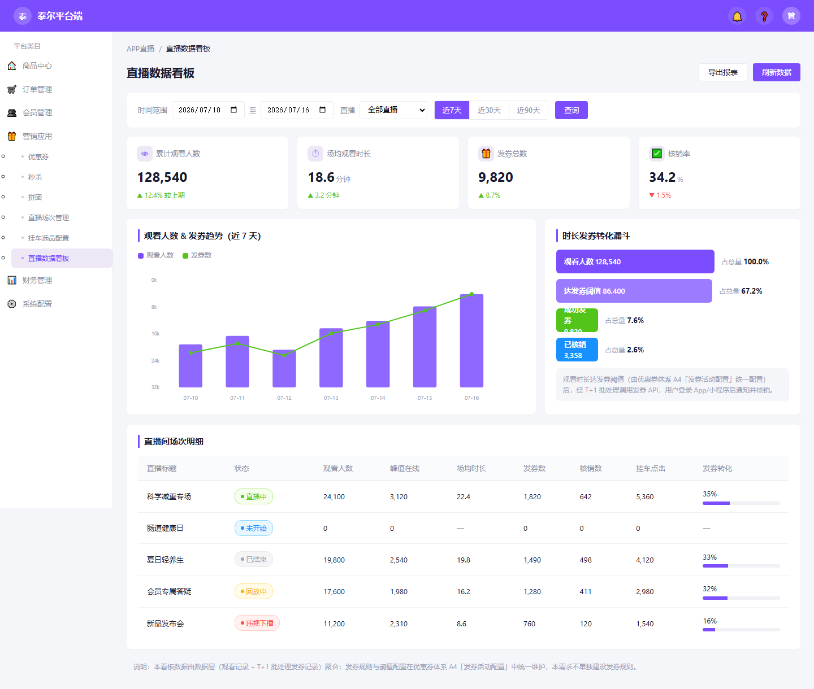
| 元素 | 手势 | 触发前 | 触发后 | 异常/反馈 |
|---|---|---|---|---|
| 月份/日期筛选 | 选择后点击「查询」 | 月汇总选「月」（年+月）、日汇总选「日」（年+月+日） | 刷新数据表格 | 无数据时显示空态 |
| 近 7/30/90 天 | 点击 | 默认近 7 天 | 时间范围自动切换并刷新 | — |
| 「导出报表」 | 点击 | 列表有数据 | 下载当前筛选条件下的 Excel 报表 | 无数据时提示「暂无数据可导出」 |
| 明细表行 | 点击 | 列表展示 | 跳转该直播间详情页（可选） | — |
| 场景 | 处理规则 |
|---|---|
| 无数据 | 数据表格显示「暂无数据」；趋势图、漏斗（若展示）显示空态。 |
| 时间范围跨月 | 按自然日聚合，X 轴显示 MM-DD。 |
| 筛选单场直播 | 趋势图只显示该直播开播前后 7 天数据。 |
| 字段/数据 | 来源 | 说明 |
|---|---|---|
| 观看人数/时长 | 本需求观看记录表 | 按 user_id 去重/求中位数 |
| 发券数 | 本需求发券触发记录表 | result=issued |
| 核销数/券状态 | 优惠券体系（第三方） | 通过券批次/券实例反查 |
| 挂车点击 | 埋点 / 本需求点击记录表 | 可复用 purchase_link_click |
直播挂车-后端原型.html（平台端后台）顶部「直播商品」页面。| 字段/数据 | 来源 | 说明 |
|---|---|---|
| 商品基础信息 | 商品域「商品中心」（第三方） | 只读获取 |
| 推送状态 | 火山引擎接口返回 | 成功/失败 |
| 推送关系 | 本需求挂车关系表 | live_id + goods_id |
| 配置项 | 说明 | 数据来源 |
|---|---|---|
| 触发源 | 选择「直播观看时长发券」 | 优惠券体系 A4 |
| 时长阈值 | 正整数，单位秒，例如 300（5 分钟） | 运营在 A4 配置 |
| 关联直播间 | 选择本需求创建的直播间（多选） | 本需求直播场次表 → A4 可选 |
| 单用户限领 | 每个用户每场/活动期间最多 N 张 | 运营在 A4 配置 |
| 券模板/有效期 | 选择优惠券体系已有券模板 | 优惠券体系 |
以下采用 Given（前提）→ When（操作）→ Then（结果）描述关键场景。
profile_complete/report_upload/retention_return 整事件删除，purchase_link_click/purchase_confirm 删除 recommend_id 等），本需求复用事件时只引用 v2.3 保留（非划线）属性。上报参数中 user_id 为泰小虎跨端 UserId，live_id 为火山场次ID。完整字段格式以 v2.3 的 23 列标准结构（事件编号/项目/所属层/平台/模块/事件英文名/事件显示名/事件类型/属性英文变量名/属性显示名/数据类型/属性说明/触发时机/创建人/创建时间/备注/必填性/示例值/关联指标/上报时机/去重规则/校验规则/状态/测试进度）为准，下表按核心列呈现。| 复用事件（v2.3） | v2.3 编号/层/模块 | 本需求触发场景 | 复用属性（v2.3 保留，非划线） | 需补充的直播场景参数 |
|---|---|---|---|---|
| page_view | #2 / L1 / common | 进入直播观看 H5 / 商城落地页 / 消息中心 | page_name、page_path、source_page、stay_duration | page_name 新增枚举 live_watch_h5 / mall_landing_h5 / message_center；观看页补 live_id |
| button_click | #4 / L1 / common | 弹窗「去使用」、挂车商品卡点击 | page_name、button_name、button_type | button_name=coupon_use / live_cart_click；补 live_id、goods_id |
| popup_view | #5 / L1 / popup | 登录后「获得 X 张优惠券」弹窗曝光 | popup_instance_id、popup_name、popup_type、trigger_source | popup_name=coupon_notify；补 live_id、coupon_count、batch_id |
| popup_close | #6 / L1 / popup | 获券弹窗关闭 | popup_instance_id、popup_name、close_method、stay_duration、user_choice | popup_name=coupon_notify；close_type（去使用/关闭/X） |
| purchase_link_click | #19 / L3 / purchase | 挂车商品点击跳转内部 H5 落地页 | click_id（v2.3 改为 message_id 用于归因）、source、product_id、product_name、purchase_channel、dialogue_id | 补 live_id；source=service_live（v2.3 枚举含 service_live）注：v2.3 已删除 recommend_id，不引用 |
| purchase_confirm | #20 / L3 / purchase | H5 落地页「确认购买」 | order_id、click_id（message_id）、product_id、product_name、product_price、quantity、source_page、dialogue_id | 补 live_id；source_page=product_detail_h5注：v2.3 已删除 recommend_id，不引用 |
page_view，page_name=live_watch_h5）展示获券弹窗（popup_view / popup_close）。| 事件编号 待 v2.3 排定 | 所属层 | 平台 | 模块 | 事件英文名 / 显示名 | 事件类型 | 属性（英文 / 显示名 / 类型 / 必填） | 触发时机 | 上报时机 | 去重规则 | 校验规则 | 状态 |
|---|---|---|---|---|---|---|---|---|---|---|---|
| 新增-1 | L2 | 数据层 / 服务端 | live | live_watch_heartbeat 观看时长心跳 | 心跳回调 | user_id / 用户ID / string / 必填 live_id / 火山场次ID / string / 必填 heartbeat_seq / 心跳序号 / number / 必填 duration_delta / 累计时长增量(秒) / number / 必填 ts / 心跳时间 / datetime / 必填 | 火山观播 SDK 心跳回调（实时） | 每次心跳即时上报数据层 | user_id + live_id + heartbeat_seq 幂等 | duration_delta ≥ 0；heartbeat_seq 递增；间隔异常（<2s 或 >120s）丢弃 | 待评审 |
| 新增-2 | L2 | Android / iOS | live | live_watch_end 单次观看结束 | 离开 | user_id / 用户ID / string / 必填 live_id / 火山场次ID / string / 必填 watch_duration / 本次观看时长(秒) / number / 必填 exit_type / 退出方式 / string / 必填（normal / background） ts / 结束时间 / datetime / 必填 | 用户退出观看页 / 切后台（onPause） | 退出或切后台时一次性上报 | 同一 session + live_id 仅一次 | watch_duration ≥ 0；exit_type ∈ {normal, background} | 待评审 |
| 新增-3 | L3 | 数据层 / 服务端 | coupon | coupon_issue_trigger 发券触发结果 | 接口返回结果 | user_id / 用户ID / string / 必填 live_id / 火山场次ID / string / 必填 rule_id / 发券规则ID / string / 必填 result / 结果 / string / 必填（issued / skipped / failed） coupon_batch_id / 券批次ID / string / 条件必填（issued 时必填） ts / 触发时间 / datetime / 必填 | T+1 批处理发券判定（达阈值 / 跳过 / 失败） | 批处理每用户每规则结果上报 | user_id + live_id + rule_id 每批次仅一次 | result ∈ {issued, skipped, failed}；result=issued 时 coupon_batch_id 必填 | 待评审 |
purchase_link_click 点击），如需后续监测可再评估复用 recommend_view。| 维度 | 要求 |
|---|---|
| 性能 | 观看时长心跳上报轻量、可高并发写入数据层；T+1 批处理需支持全量观看记录扫描，设批处理窗口与失败重试；直播流低延迟播放（依赖火山）。 |
| 兼容性 | 用户端支持微信小程序、App（iOS / Android）、独立 H5 浏览器；环境识别失败兜底 H5 商品详情页；后台适配主流桌面浏览器。 |
| 安全 | 泰小虎 UserId 透传需防篡改（签名/校验）；观看时长防刷（心跳间隔异常丢弃）；发券幂等（user_id+live_id 幂等键）；后台操作需权限校验。 |
| 埋点要求 | 关键转化链路（进入→观看→挂车点击→发券触发→通知→去使用）全埋点，参数含 user_id/live_id 以便归因。 |
| 可用性 | 发券为 T+1 批处理，弱网/火山回调丢失不影响已沉淀时长判定，无需实时发券兜底。 |
PM 撰写前自检表，逐项确认如下（✔ 已覆盖）：
| 自检项 | 结论 / 处理 |
|---|---|
| ✔ 网络与异常状态 | 弱网/断网/服务器 500：发券 T+1 无需实时兜底（E2）；火山回调丢失仅缺该时段时长；后台控制失败气泡提示（AC-9）。 |
| ✔ 登录与游客态 | 未登录直跳登录、期间不计时不发券（E1/AC-1）；登录成功回观看页从头计时；登录后首屏弹获券（AC-5）。 |
| ✔ 极限值与空状态 | 挂车空状态（无商品提示）、直播间列表空态、直播名称≤17字、副标题≤30字、封面图规格校验、挂车上限 N 提示（AC-8）。 |
| ✔ 版本兼容性 | 新功能独立 H5 + 接入火山，老版本 App/小程序不受影响；UserId 字段跨端兼容；新消息类型需老版本兼容或兜底。 |
| ✔ 逆向流 / 退款 | 券退款/退货/过期由优惠券体系负责，本需求仅记录触发、不持有券实例（E6）；未登录不发券、未达阈值不发券，无逆向发券。 |
| ✔ 高并发与防重 | 发券幂等键（user_id+live_id）防重复发；心跳间隔异常丢弃防刷时长；表单/控制操作防重复提交。 |
定稿后任何需求变更，须在文档中高亮标出变更内容，并主动 @ 开发（江世华） 与 @ 测试（xx），同步至产品组内评审群；跨需求变更（如优惠券体系 A4 触发源增强）须同步对应需求负责人。